FFP · Goldener Herbst 2026 · Reinraum-Fallstudie · Stand 2026-10-09 21:50 CEST
Armin Müller-Stahl, die Einleitung: ein Test in zwei Teilen, 8. und 9. Oktober 2026. Wer das Original sieht, schreibt nur einen Brief. Wer erzeugt, sieht das Original nie.
Zwei Tests, dieselbe Frage: Lässt sich Fremdmaterial durch Erzeugtes ersetzen, das dieselbe Welt heraufbeschwört, ohne das Original zu kopieren? Links das Original, das nicht verwendet werden darf; daneben die drei erzeugten Fassungen, als Bleistiftzeichnung (Version 1), im 3D-Stil (Version 2) und fotoreal (Version 3), aus demselben Brief und demselben Figurenblatt.
Weitere Takes (Test B, der Kirchenfürst, fotoreal und 3D-Stil; der Kontrolllauf ohne Figurenblatt; die drei ersetzten Takes) liegen mit Prompt, Kontaktbogen und Ledger unter videos/ und sind in der Quellenliste als V-001 bis V-009 geführt. Der Kontrolllauf ergab, blind beurteilt: ohne Figurenblatt entsteht ein plausibler alter Kardinal, der nicht er ist. Das Blatt kauft die Ähnlichkeit, die Worte kaufen den Typ.
Alles, was zum Ergebnis geführt hat: die weiteren Takes und Bilder, die Briefe, Vorhersagen, Regeln, Fehlversuche, die Belege zum Download, das Interview, die Quellenliste und das interne Archiv. Je Thema einklappbar.
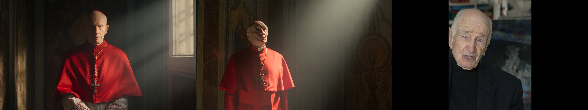
Für die Einleitungen der Sendung hat FFP im Archivsystem des Senders nur Material gesucht, das dort als frei markiert war, es bestellt und in die Einleitungen geschnitten. Die Rechteabteilung des ORF hat anschließend fast alles zurückgewiesen: Von 96 verwendeten Ausschnitten kamen 79 mit „Nein“ oder „Nein, aber“ zurück, 17 waren frei.
Die Fallstudie prüft einen Ausweg: Das Fremdmaterial wird nicht kopiert, sondern durch erzeugtes Material ersetzt, das dieselbe Welt heraufbeschwört, ohne den Schnitt nachzubauen. Dafür gibt es eine Wand: Wer das Original sieht, schreibt nur einen Brief auf Flughöhe eines Pitches. Wer erzeugt, sieht das Original nie.
Beispiel: Armin Müller-Stahl. Sein Einverständnis für Gesicht und Material liegt FFP mündlich vor, die schriftliche Fassung wird nachgereicht; was fehlt, sind die Rechte der Filmproduzenten. Deshalb darf er erscheinen, die Szenen müssen neu sein.
| Analystenseite (ffp-archive) | Was hinübergeht | Erzeugerseite (storyboard, imagegen, videogen) |
|---|---|---|
| Sieht alles: Schnitt, Quellen, Standbilder im Sekundenabstand, Schnitterkennung innerhalb der Clips, Sprecherspur. Führt eine private Shotliste. | Nur der Brief. Sechs Teile: Welt, Bogen, Stimmung und Bildsprache, Personen als Typen, Rhythmus in Worten, Ausschlüsse. Dazu wiederkehrende Motive. Nie: Titel, Sender, Zahl, Länge oder Reihenfolge der Einstellungen, Kompositionen. | Sieht das Original nie. Baut aus dem Brief Storyboards in zwei Stilen, dann Bilder und Video. Jede Ablehnung wird protokolliert, jeder Fehlversuch bleibt stehen. |
Das Gesicht der Hauptfigur kommt aus eigenem Material: Standbilder aus dem Interview, das FFP 2026 mit ihm gedreht hat. Keine Filmbilder, keine Sendungsbilder, keine Pressefotos gehen in die Erzeugung; auch private Set-Fotos, die er uns gab, nicht, weil der Abzug kein Nutzungsrecht ist. Zwei Ausnahmen auf Entscheidung des Produzenten (9.10., 21:00 und 21:30), nur für diesen Test: ein Porträt mit etwa 45 bis 50 und ein Filmbild mit etwa 30 bis 35, beide nach seiner Angabe aus dem privaten Archiv von Armin Müller-Stahl, gehen als Referenz für je ein Altersblatt in die Erzeugung; die Zeilen dazu führt ffp-archive (Q-014 und Folge), Fotograf und Quelle des Filmbilds sind nicht erfasst.
Das sind die Texte, die über die Wand gegangen sind. Nichts anderes. Die Dateien liegen unter briefe/.
Reinraum-Brief nach dem Sechs-Teile-Prompt. Verfasst von ffp-archive am 08.10.2026 aus dem Schnitt V07, Fassung 4 (Jahrzehnte als Zeitbezug an Rollen und Motiven, Stilnamen nach der Festlegung vom 08.10.). Gegenstand ist ausschließlich das Fremdmaterial der Einleitung, rund zweieinhalb Minuten Archivausschnitte, die unter einem Sprechertext laufen. Das Interview und eigene Aufnahmen gehören nicht dazu und bleiben, wie sie sind. Der Sprechertext ist vorläufig; Teil zwei folgt seiner heutigen Fassung. Dieser Brief ist das Einzige, was zur Erzeugerseite geht.
Ein Lebensbild aus Archivmaterial: der Rollenreigen eines deutschen Charakterdarstellers, der in beiden Teilen des geteilten Landes gearbeitet hat und spät in der weiten Welt ankam, dazu Nachrichten- und Magazinstücke, die ihn als Maler, Musiker und als gefeierten alten Mann zeigen. Die Traditionen, aus denen das Material stammt: Fernsehspiel der Nachkriegsjahrzehnte, ostdeutsches Kino der siebziger Jahre, Nachrichtenfilm derselben Zeit, Literaturverfilmung und Kostümfilm der Jahrtausendwende, amerikanischer Thriller der Nullerjahre, dazu Kulturmagazin und Retrospektive des Fernsehens. Alles ist gefundenes, fremdes Bild; nichts davon wurde für dieses Porträt gedreht.
Ein Gesicht, das viele Filme geprägt hat, erzählt selbst. Angelegt als Geiger, berühmt als Schauspieler, seit Jahrzehnten auch Maler. Die Jugend steht im Zeichen von Flucht und Neuanfang ohne Vater im Osten des geteilten Landes. Sein Widerspruch gegen die Ausbürgerung eines Liedermachers bringt ihn ins Visier des Staates; er geht in den Westen und kann dort als einer von wenigen ohne Bruch weitermachen. Dann, ohne ein Wort der Sprache, der Sprung nach Amerika, bis hin zu einer Nominierung für den wichtigsten Filmpreis der Welt. Heute lebt er an der Nordsee, nachdem sein amerikanisches Haus einem Waldbrand zum Opfer fiel, und malt jeden Tag. Emotional beginnt es bei Neugier auf ein bekanntes Gesicht, kippt in Ernst, Enge und Verlust, öffnet sich ins Große und landet in Gelassenheit.
Ein Material, das mit den Jahrzehnten die Haut wechselt. Schwarz-Weiß als Ton der Jugend und der Erinnerung, grobkörnig, weich. Die siebziger Jahre warm, leicht ausgebleicht, mit Nebel und flachem Winterlicht über Alleen; dazu ein Zimmer mit einer Gitarre. Die achtziger fahl und flach wie ein Fernsehspiel. Die neunziger bläulich kühl, Fensterlicht. Die Jahrtausendwende satt und dunkel: Kerzenlicht, tiefes Rot, Kronleuchter, Bibliothek, ein Schreibtisch mit Lampe. Das Kino der Nullerjahre hart, sauber, gelb-rot gesättigt. Das Fernsehen von heute kühl und nüchtern, Magazinlicht. Dazwischen stehende Fotografien, Pressebilder, zwei gemalte Porträts in expressivem Strich, und einmal eine große, leere Bühne in warmem Arbeitslicht, auf der ein einzelner Mensch steht. Die Kamera ist meist fremd und älter: statische Fernsehbilder, ruhige Filmtotalen, einzelne Nahaufnahmen mit viel Gesicht, selten Bewegung. Die Stimmung schwankt zwischen Nostalgie und Unruhe, zwischen Fasching und Staatsmacht, und mündet in eine große, fast feierliche Stille.
Armin Müller-Stahl, die Hauptfigur, darf genannt und beschrieben werden. Er erscheint hier fast nur in seinen Rollen und in Pressebildern, als derselbe Mann in vielen Altern. Das Jahrzehnt steht als Zeitbezug dabei: ungefähr, als Epoche des Bildes und der Kleidung, nicht als Produktionsjahr eines Films.
Alle anderen nur als Typen: eine Familie im Auto, Frau und Kinder, Lachen; ein Junge am Schachbrett; zwei Mädchen, eine mit Geige, in rotem Kleid; eine blonde Begleiterin; Männer in roten Roben; eine Wache in Uniform; eine Ballgesellschaft bei Kerzenlicht; ein Mann im dunklen Anzug als Gegenüber.
Quer durch die Rollen kehren Dinge wieder, die eine eigene Montage tragen können, in eigener Reihenfolge und Länge, jeweils mit ihrem Jahrzehnt: die Zigarre, in Uniform (achtziger, Schätzung) wie im hellen Anzug (neunziger, Schätzung); Kopfbedeckungen, die ihn jedes Mal zu einem anderen machen, Schirmmütze (sechziger, Schwarz-Weiß), Fellmütze (siebziger), Sternenhut (Jahrtausendwende, Kostüm); die Brille, die ihn älter und strenger macht (achtziger, und am Schreibtisch der Jahrtausendwende); das Auto mit Familie und die neblige Allee (siebziger); die Gitarre im Zimmer (siebziger); der Schreibtisch mit Lampe und Bücherwand (Jahrtausendwende, Kostüm); die rote Robe (Nullerjahre); das Schachbrett mit einem Jungen (Nullerjahre); die große leere Bühne (zehner Jahre); alte Fotografien und gemalte Gesichter (heute). Die Motive sind das Material der Montage, nicht ihre Abfolge.
Ein kurzer Auftakt, eine Tür geht auf. Dann ein Staccato über Jahrzehnte: kurze Bilder in dichter Folge, Rolle auf Rolle, mit kleinen Atempausen, wenn ein Foto oder ein gemaltes Gesicht stehen bleibt. In der Mitte wird es breiter und wärmer, die Familie, die Allee, die Gitarre, ein ruhiger Puls. Dann ein Schub ins Große, schneller, härter, Rot und Gold. Gegen Ende eine Fermate: der Mensch allein auf der Bühne, lange gehalten, wie angehaltener Atem. Ausklang leise.
Gesehen und bewusst nicht beschrieben: alle Film- und Sendungstitel, Sender und genauen Produktionsjahre (Jahrzehnte als Epoche sind erlaubt und stehen in Teil Vier); ein Kinoplakat auf einem Bus vor einer berühmten Kuppel und eine Straße in dieser Stadt; eine Prozession roter Roben in einem bestimmten Korridor mit Wache und ein Zweiergespräch vor einem Kruzifix, beides erkennbare Kompositionen eines fremden Kinofilms; der Name des Liedermachers und des Preises; gemalte Porträts, deren Vorbilder erkennbar sind; das Gesicht eines bekannten Schauspielkollegen; Gesichter von Kindern und Begleiterinnen; Schriftinserts, Logos und Senderkennungen; die Musik; die Zahl, Länge und Reihenfolge der Einstellungen; der genaue Ort des Hauses.
Hinweis an die Erzeugerseite: Armin Müller-Stahl hat FFP laut Philipp (08.10.2026) das Einverständnis gegeben, sein Gesicht und sein Material frei zu verwenden; er darf daher im 3D-Stil (stilisiert, nicht fotoreal) wie fotoreal erkennbar erscheinen, auch in erfundenen Rollenbildern. Was fehlt, sind die Rechte der Filmproduzenten: Die Szenen müssen neu sein. Keine synthetische Stimme. Das Interview und die eigenen Aufnahmen des Porträts sind nicht Teil dieses Briefs.
Reinraum-Brief nach dem Sechs-Teile-Prompt, für die einzelne Sequenz. Verfasst von ffp-archive am 08.10.2026. Gegenstand ist eine einzige Stelle der Einleitung: wenige Sekunden aus einem Kinofilm der Nullerjahre, in dem die Hauptfigur einen hohen Geistlichen spielt, eingebettet in einen Fernsehbericht von der Premiere. Die Rechte an diesem Film liegen bei Dritten; nichts davon darf nachgebaut werden. Der Brief beschreibt deshalb nicht die Filmszene, sondern eine neue, eigene Szene, die dieselbe Welt heraufbeschwört. Die Hauptfigur darf nach Einverständnis (laut Philipp, 08.10.2026) erkennbar erscheinen, im 3D-Stil (stilisiert, nicht fotoreal) und fotoreal.
Ein Vatikan-Thriller der Nullerjahre: das Innere der Macht einer alten Kirche, Marmor, Gold, tiefes Rot, Gänge mit Fresken, Wachen in historischer Uniform, der große Platz und die Kuppel darüber. Die Tradition ist die des amerikanischen Verschwörungs- und Rätselthrillers, in europäischer Kulisse gedreht, hochglänzend, schnell, mit Ehrfurcht vor dem Ort und Misstrauen gegen die Menschen darin. Was wir daraus nehmen, ist allein die Welt und der Stand der Hauptfigur darin; die Geschichte unten ist unsere eigene.
Ein Papst ist gestorben. Die Kardinäle der Welt sind in Rom versammelt, abgeschlossen von allem, und beraten. Sie sprechen miteinander, in kleinen Gruppen, leise, mit Blicken, die mehr sagen als Worte. Draußen wartet die Menge. Ein erster Wahlgang scheitert: schwarzer Rauch steigt aus dem Schornstein über dem Platz. Die Beratungen gehen weiter, enger, müder. Dann steht der alte Kardinal, dem das Amt zufällt, das Konklave zu leiten, einen Moment allein, abseits, in Gedanken. Und schließlich weißer Rauch über Rom, über der Kuppel, über dem Platz. Emotional: von gedämpfter Trauer und Spannung über Ermüdung und Zweifel zu einem Moment der Stille und einem Aufatmen, das nicht Triumph ist, sondern Erleichterung.
Innen warm und schwer: Kerzen- und Lampenlicht auf Rot und Gold, tiefe Schatten, Marmor, Holz, Fresken, das Licht fällt von hohen Fenstern schräg herein. Außen kühles Tageslicht über hellem Stein, ein weiter Platz, der Himmel über der Kuppel, der Rauch zuerst schwarz, dann weiß gegen das Blau oder gegen die Abenddämmerung. Die Kamera innen ruhig, beobachtend, nah an Gesichtern und Händen, mit langsamen Fahrten durch Gänge; außen groß und still, die Menge als Fläche, der Schornstein als winziges Detail im Großen. Textur sauber und satt wie im Kino, ohne Körnung. Die Stimmung: feierlich, gedämpft, lauernd; in der Mitte ein Durchatmen in der Einsamkeit; am Ende Weite.
Armin Müller-Stahl, genannt und erkennbar, als alter Kardinal, dem die Leitung der Wahl zufällt: hochbetagt, hager, aufrecht, mit prüfendem Blick und ruhigen Händen, in Rot mit weißem Kragen, ein Mann, der seine Karten verdeckt hält und wenig sagt. Was er will: dass die Wahl zu Ende kommt und die Kirche nicht zerbricht. Alle anderen nur als Typen: Kardinäle verschiedenen Alters und verschiedener Herkunft in Rot; Wachen in historischer Uniform; Helfer in Schwarz; die Menge auf dem Platz, Gesichter nach oben gerichtet; keine zweite tragende Figur, kein Gegenspieler.
Langsam, gemessen, ein Schreiten. Beratungen als Wellen: leise anschwellend, abbrechend, wieder anschwellend. Der schwarze Rauch ein kurzer Schlag, dann Stillstand. Der Mann allein: eine lange Fermate, nichts bewegt sich außer seinem Blick. Der weiße Rauch löst sich wie ein Ausatmen; das Bild öffnet sich in die Weite über der Stadt und bleibt dort stehen.
Gesehen und bewusst nicht beschrieben: der Titel des Films, die Vorlage, Regie, Studio und Darsteller; der Name der Figur; die Handlung des Films, insbesondere Entführung, Verschwörung, Bedrohung und jede Gegenfigur; das Plakat auf einem Bus und die Straße vor der Kuppel aus dem Premierenbericht; die Prozession roter Roben in einem bestimmten Korridor mit Wache und das Zweiergespräch vor einem Kruzifix in einem roten Raum, beides Kompositionen des Films, die nicht nachgebaut werden; Gesichter anderer Darsteller; Logos und Senderkennungen; Musik.
Hinweis an die Erzeugerseite: Das Konklave mit schwarzem und weißem Rauch ist ein reales Ritual und gehört niemandem; die Figur ist ein Amt, kein Filmcharakter. Was zu vermeiden ist, sind die Bilder des Films, nicht die Welt. Keine synthetische Stimme kein ton, den amchen wir nachher! keine recherche zu mitspielern. aber conclave ist 95% weisse männer und rest internationale männer alter so wie üblich.
Anhang zu Brief B (Konklave). Verfasst von ffp-archive am 08.10.2026, nach Philipps Entscheidung vom selben Tag. Gehört zu Brief B und wird nach seiner Lektüre eingearbeitet. Nur ein Test.
Eine Figur, die durch alle Bilder des Tests dieselbe bleibt: ein Mann von etwa 77 Jahren, Kardinal, mit dem Gesicht von Armin Müller-Stahl. Das Blatt wird einmal gebaut und dann in jedem Lauf als Referenz der Figur mitgegeben. Alles andere an der Szene bleibt erfunden.
Aus eigenem Material von FFP: dem Interview mit Armin Müller-Stahl, Hamburg, Juni 2026. Drei bis fünf frontale Standbilder in ruhigem Licht liegen als Bildreferenz bei (Ordner Figurenblatt_Gesicht_Interview2026, Quellenliste Q-002). Sie zeigen ihn mit 95. Das Blatt soll ihn mit etwa 77 zeigen: gleiche Züge, gleicher Blick, weniger Jahre. Das Zurücksetzen des Alters geschieht in Worten, nicht mit anderen Bildern.
Einwilligung: laut Philipp (08.10.2026) darf FFP sein Gesicht und sein Material frei verwenden; die schriftliche Fassung wird nachgereicht. Er darf erkennbar erscheinen, in beiden Stilen.
Nichts aus Filmen, nichts aus Fernsehsendungen, nichts aus Archiven Dritter. Keine Kostümdetails, die eine bestimmte Produktion zitieren. Keine Schrift, keine Logos.
Philipp (08.10.2026): Die Szene von Test B wird so gebaut wie die Ausgrabung von 1875 auf der Olympia-Seite. Die fünf Schritte, übertragen:
Dann die ganze Szene in einer Erzeugung: etwa fünf Einstellungen, zwanzig Sekunden, ein Text. Jede Fassung und ihre Messung bleibt im Arbeitsraum liegen; die fünfte Fassung war dort die gültige, hier rechnen wir ebenfalls mit mehreren.
Eine Figur, die durch alle Bilder dieselbe bleibt: derselbe Mann, aus fünf Interviewbildern (1080p, Kopf und Schultern, native Pixel) zuerst im echten Alter gebaut, dann in Worten um achtzehn Jahre zurückgesetzt, dann als Kardinal eingekleidet, dann in den 3D-Stil und in den Bleistift-Stil übersetzt, dazu vier Altersblätter. Jeder Schritt ist ein Edit des vorigen mit einer einzigen Variablen. Vor dem ersten Lauf: Blatt neben den Interviewbildern, per Auge, Identität, nicht Alter (Regel R-001).
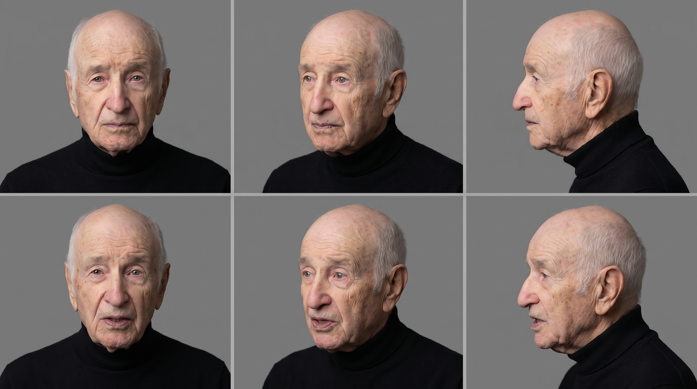
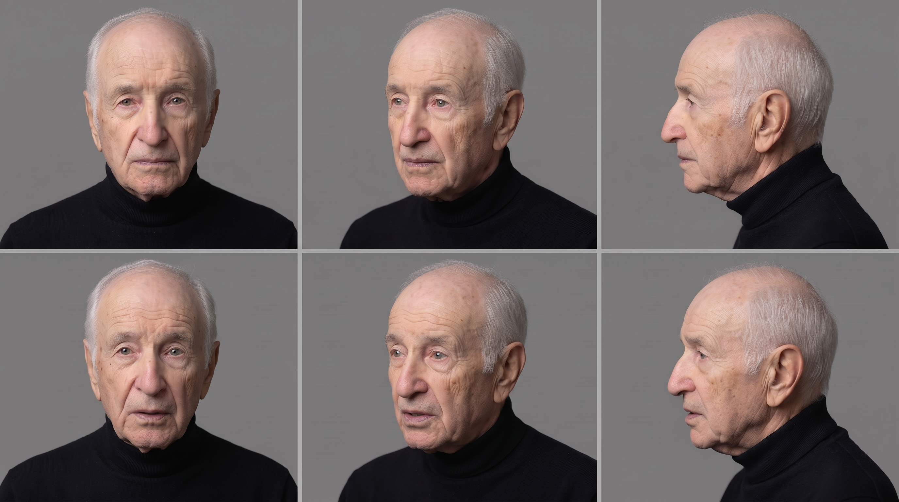
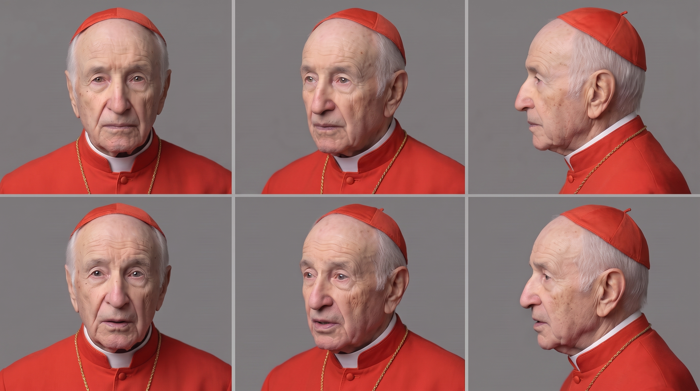
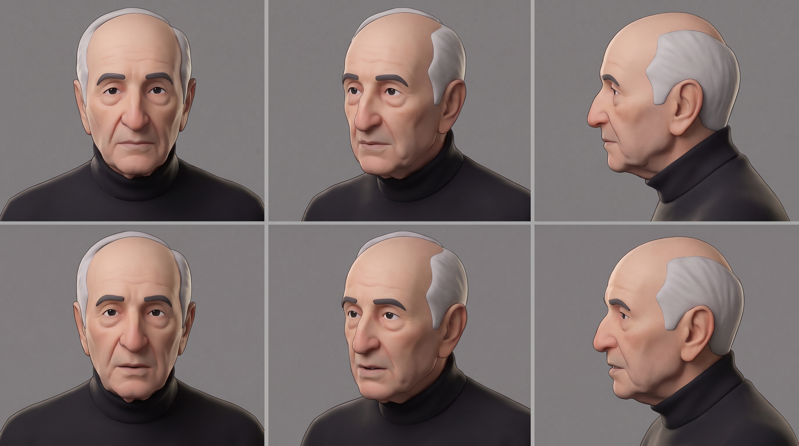
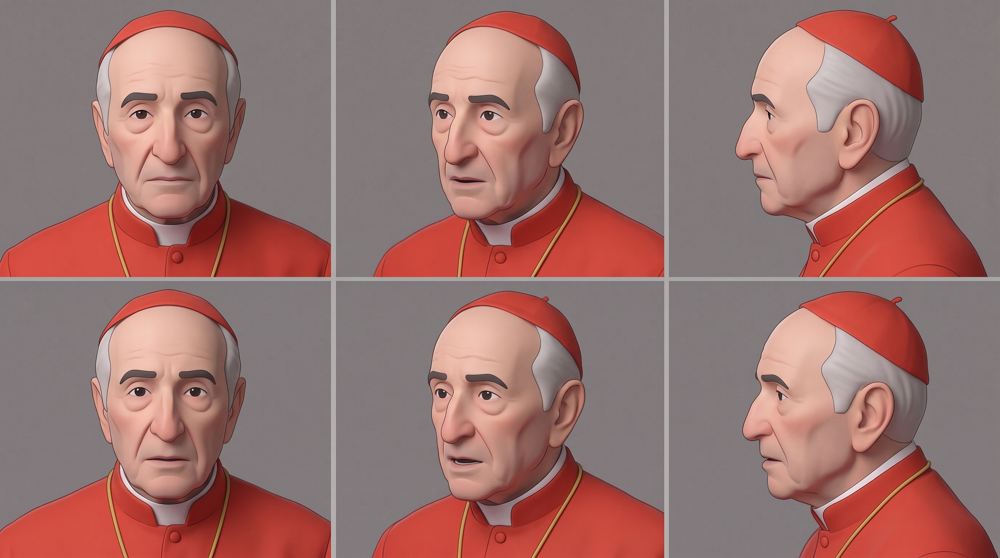
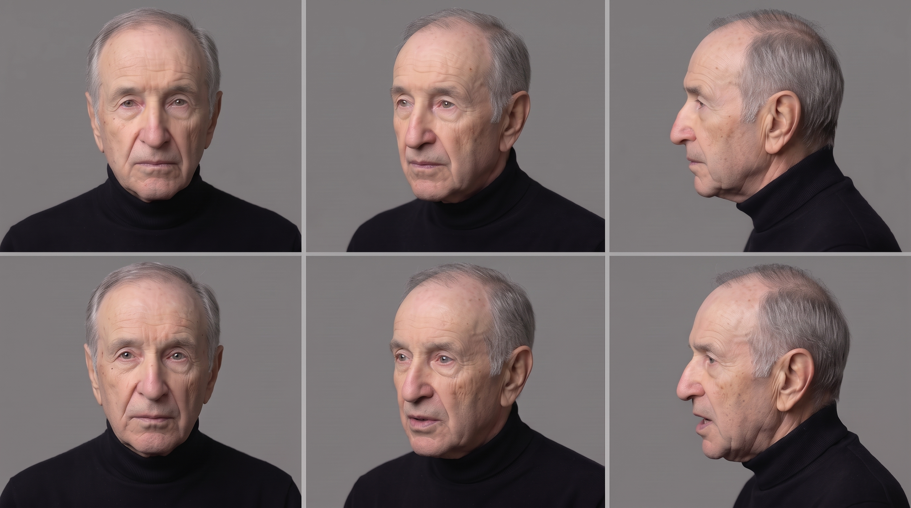
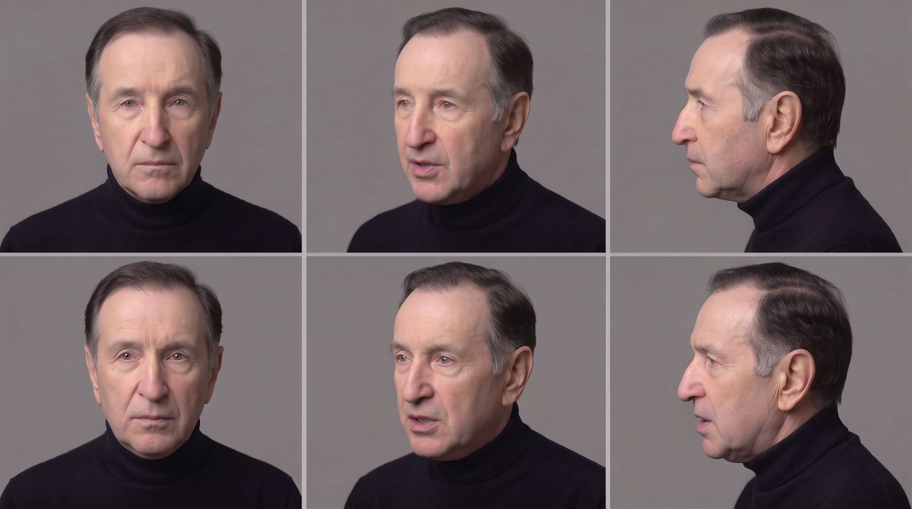
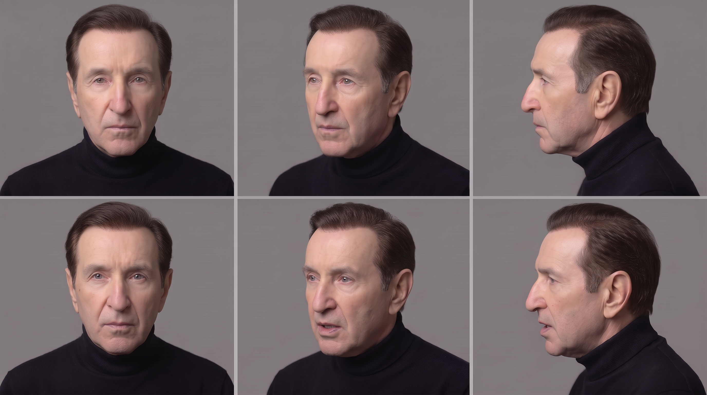
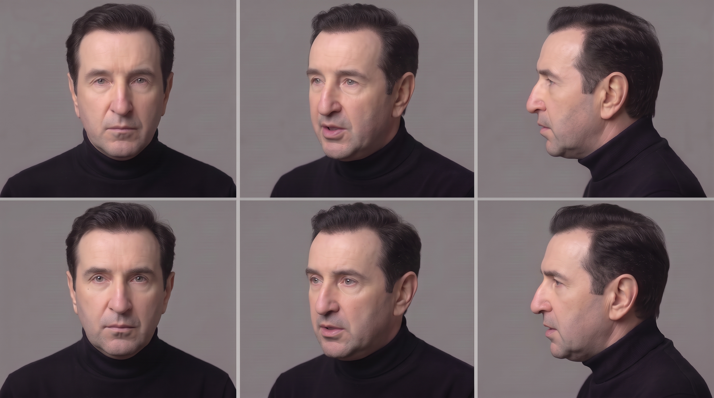
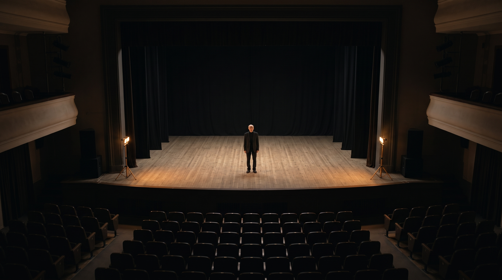
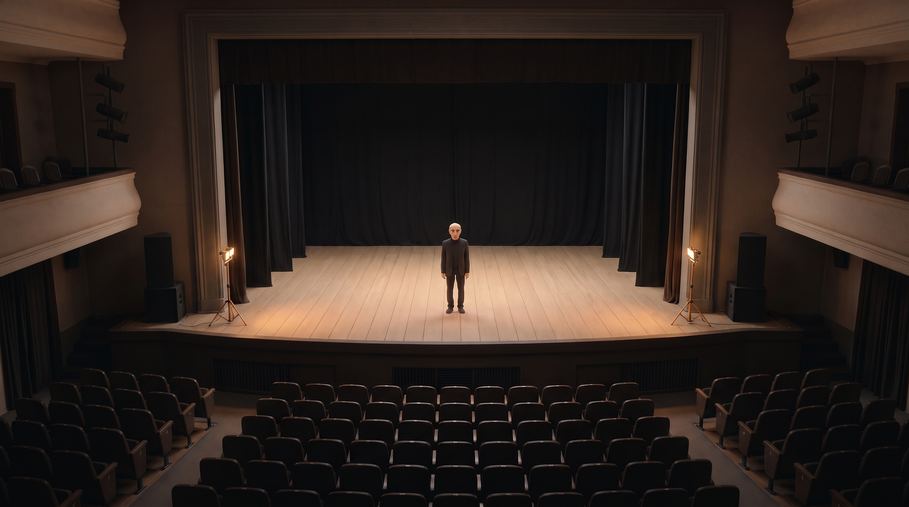
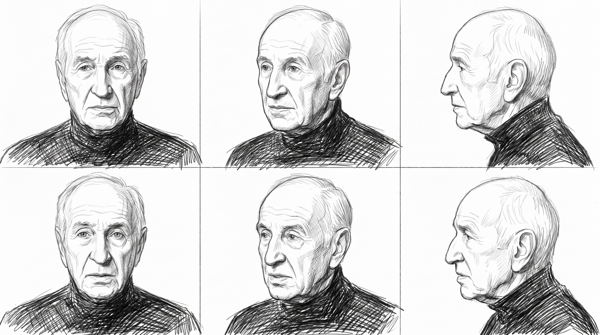
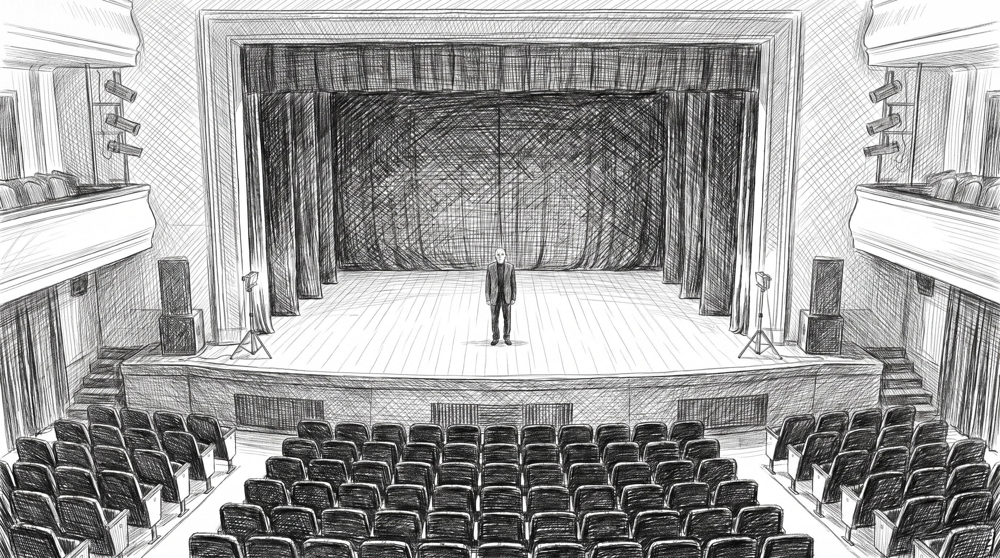
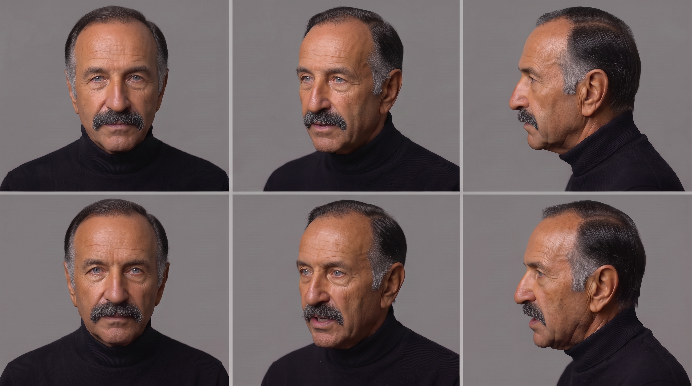
Jede Vorhersage wurde geschrieben, bevor Credits ausgegeben wurden, und danach benotet; die Prompts hat Philipp vor jedem Lauf gesehen. Neun Takes, alle aus denselben Briefen und demselben Figurenblatt.
| Vor der Ausgabe geschrieben | Quote | Urteil |
|---|---|---|
| Alle 13 Montage-Einstellungen vorhanden, erster Take | 0,30 | gehalten, zu vorsichtig |
| Kosten 270 je 30-s-Lauf | 0,90 | verfehlt: 360 verrechnet, Preis geändert |
| Vier Altersblätter auf Anhieb | 0,35 | verfehlt: 1, 2, 3, 3 Takes |
| Alter je Jahrzehnt lesbar (nachträglich) | - | zweimal verfehlt |
| Keine Abzeichen (nachträglich) | - | verfehlt; Korrektur hielt bei B |
| Das Bühnenlicht dimmt wie geschrieben | 0,70 | teilweise: dimmt, aber zu früh |
| Zweiter Durchgang behebt das Gesichtsleck | 0,55 | gehalten |
| Kontrolle: ein blinder Prüfer erkennt ihn nicht | 0,75 | gehalten (Philipp, 9.10. 11:16) |
| Identität über sechs Alter, fotoreal (A-1) | 0,45 | teilweise: er ab den Sechzigern, nicht in den jungen Einstellungen (Philipp, 9.10. 12:03) |
| Eine erkennbare Figur in 3D (A-2) | 0,50 | gehalten (Philipp, 9.10. 12:04) |
| Regel | Wortlaut |
|---|---|
| R-001 Identität | Vor dem ersten Seeden: Figurenblatt Seite an Seite plus Differenzbild gegen die Interviewbilder, per Auge, geprüft wird Identität, nicht Alter. Kein KI-Upscale auf ein echtes Gesicht, nur Lanczos. |
| R-002 Zeilen | Jede erzeugte Eingabe bekommt eine eigene Zeile in der Quellenliste mit Verweis auf ihre Eingaben, Modell, Transport, Größe, Lauf. Wer erzeugt, schickt die Zeile; ffp-archive trägt ein. |
| R-003 Alter | Altersedits in Stufen von 15 bis 20 Jahren, jede Stufe als Edit des gebundenen Vorgängers. Das Pro-Modell komponiert oder editiert dieses Gesicht nur im Alter der gebundenen Referenz; jede Altersverschiebung trägt das Flash-Modell. |
| R-004 Wasserzeichen | Aufgehoben am 9.10.: Takes und Standbilder gehen so wie sie sind auf die Seite. Bei externer Weitergabe neu entscheiden. |
| P-001 Einwilligungssatz | Das Pro-Modell lieferte dieses Gesicht erst mit einem Eingangssatz, der eine schriftliche Einwilligung behauptet. Sie liegt noch nicht vor. Bedingung: schriftlich nachreichen, sonst Satz aus allen Prompts. |
Bleiben stehen, neben der Korrektur; die ersetzten Takes liegen mit Ledger unter videos/.
| Zeile | Was | Warum |
|---|---|---|
| G-002 | Figurenblatt echtes Alter, Kandidat 2 (Pro) | acht Felder statt sechs |
| G-013 | Altersblatt 32, Kandidat 1 | liest sich wie 50 |
| G-014 | Altersblatt 32, 45 Jahre in einem Schritt | Identität verloren, Gesicht neu gezeichnet (SSIM 0.44 bis 0.58). Daraus Regel R-003. |
| G-015 | Altersblatt 52, Kandidat 1 | zu wenig bewegt |
| G-016 | Altersblatt 42, Kandidat 1 | zu wenig bewegt |
| G-017 | Altersblatt 42, Kandidat 2 | fast Kopie der Eingabe |
| G-019 | Testbild Shot 14 fotoreal, Fassung 1 (Totale von der Bühne) | ersetzt durch Philipps Kadrierung vom Balkon |
| V-001 | Montage fotoreal, Take 1 | Alter 65 bis 85 statt der Jahrzehnte, erfundene Abzeichen |
| V-004 | Konklave fotoreal, Take 1 | jeder Kardinal trug sein Gesicht |
| ohne Datei | gemini-3-pro-image, Ablehnungen ohne Bild | 5x ohne Einwilligungssatz; 0 von 8 bei jeder Altersverschiebung; 2 von 2 bei Blatt 2 im 3D-Stil; 2x auf Testbild Fassung 1 |
| V-008 | Test A, Bleistiftstil, Take 1 (Stilblock mit 'einfarbig' neben den Jahrzehntfarben der Shots) | der Stil hielt nur in etwa 5 von 13 Einstellungen; wo ein Shot seine Farbe nannte, kippte er ins Fotoreale. Lehre: der Stil muss in jedem Shot stehen und darf dort nicht widersprochen werden; so entstand Version 1 (V-009) |
Die Fallstudie auf einer Seite: sieben Takes, Vorhersagen mit Quote und Urteil, Regeln, Vorbehalte. Vertraulich / intern. Die englische Fassung liegt auf der englischen Seite.
Der nächste Schritt für einen Sender: Ein Redakteur beantwortet ein kurzes geführtes Interview, und die Antworten schalten Vorschläge frei, die zum Format passen, so wie das EWM-Interview bei Empirica ein Arbeitsprotokoll erzeugt.
Interview starten Knopf steht, Interview folgt.
Jedes Bild, das in einen Lauf geht oder einen Menschen bei der Arbeit leitet, hat eine Zeile, bevor es verwendet wird: Herkunft, Lizenz, ob es in die Erzeugung darf, wer es geprüft hat. 75 Zeilen. Vollständig als CSV, Felder und Regeln in der LIES_MICH.
| ID | Datei | Art | Provenienz | Urheber · Lizenz | Erlaubt | Erzeugung | Lauf | Geprüft |
|---|---|---|---|---|---|---|---|---|
| Q-001 | C0065.mp4(folgt) | Gesichtsquelle (Bewegtbild, Nahkamera)Einwilligung Mueller-Stahl laut Philipp (08.10.2026, muendlich an ffp-archive), schriftliche Fassung ausstehend | eigenes Material | FFP (Interview Hamburg, Juni 2026)FFP | ja, mit Bedingung | nein (nur als Standbilder, siehe Q-002) | - | ffp-archive2026-10-08 |
| Q-003 | Stilreferenz 3D-Stil (Netflix-Werk, bei Storyboard)- | StilreferenzStil geht nur in Worten ueber die Wand (Festlegung Philipp mit Storyboard 08.10., 17:29) | nur fuer Menschen | Dritte (Netflix)urheberrechtlich geschuetzt | nein als Bildeingabe | nein | - | storyboard2026-10-08 |
| Q-004 | Ortsreferenzen Vatikan- | OrtsreferenzPetersplatz und Innenraeume nur in Worten, Innenraeume erfunden. Falls doch Bilder: nur gemeinfrei oder CC0, nie CC-BY-SA, nie Stock mit KI-Klausel, nie Pressefotos, nie aus dem Film | keine | -- | nicht vorgesehen | nein | - | ffp-archive2026-10-08 |
| Q-005 | FX6 0701.mxf(folgt) | Gesichtsquelle (Bewegtbild, Totale)wie Q-001 | eigenes Material | FFP (Interview Hamburg, Juni 2026)FFP | ja, mit Bedingung | nein (Totale, Gesicht zu klein, nur zur Sichtung) | - | ffp-archive2026-10-08 |
| Q-002a | Figurenblatt_Gesicht_Interview2026/Gesicht_Interview2026_C0065_0080s.pngafbdd0569be1aa62 | Gesichtsquelle (Standbild, 1920x1080)wie Q-001, nur fuer das Figurenblatt Test B, nicht fuer Dritte | erzeugt aus eigenem Material | FFPFFP | ja, mit Bedingung | ja (Auswahl) | (folgt) | ffp-archive2026-10-08 |
| Q-002b | Figurenblatt_Gesicht_Interview2026/Gesicht_Interview2026_C0065_0500s.png5ca520255f27c84e | Gesichtsquelle (Standbild, 1920x1080)wie Q-001 | erzeugt aus eigenem Material | FFPFFP | ja, mit Bedingung | ja (Auswahl) | (folgt) | ffp-archive2026-10-08 |
| Q-002c | Figurenblatt_Gesicht_Interview2026/Gesicht_Interview2026_C0065_1100s.pngc07c8b1baf7988dc | Gesichtsquelle (Standbild, 1920x1080)wie Q-001 | erzeugt aus eigenem Material | FFPFFP | ja, mit Bedingung | ja (Auswahl) | (folgt) | ffp-archive2026-10-08 |
| Q-002d | Figurenblatt_Gesicht_Interview2026/Gesicht_Interview2026_C0065_2600s.png2da31c9c4ac7fdd7 | Gesichtsquelle (Standbild, 1920x1080)wie Q-001 | erzeugt aus eigenem Material | FFPFFP | ja, mit Bedingung | ja (Auswahl) | (folgt) | ffp-archive2026-10-08 |
| Q-002e | Figurenblatt_Gesicht_Interview2026/Gesicht_Interview2026_C0065_3020s.png77c40ead6a523d61 | Gesichtsquelle (Standbild, 1920x1080)wie Q-001 | erzeugt aus eigenem Material | FFPFFP | ja, mit Bedingung | ja (Auswahl) | (folgt) | ffp-archive2026-10-08 |
| Q-002f | Figurenblatt_Gesicht_Interview2026/Gesicht_Interview2026_C0065_2420s.pngdd51be78af80de20 | Gesichtsquelle (Standbild, 1920x1080)wie Q-001 | erzeugt aus eigenem Material | FFPFFP | ja, mit Bedingung | Reserve | - | ffp-archive2026-10-08 |
| Q-002g | Figurenblatt_Gesicht_Interview2026/Gesicht_Interview2026_C0065_2780s.png4c5b2ffcfe20aa22 | Gesichtsquelle (Standbild, 1920x1080)wie Q-001 | erzeugt aus eigenem Material | FFPFFP | ja, mit Bedingung | Reserve | - | ffp-archive2026-10-08 |
| Q-006 | Portraetfoto Mueller-Stahl (von Philipp im Chat gezeigt, 08.10., blaues Hemd, dunkles Sakko, etwa 75-80 Jahre)(Datei liegt noch nicht vor) | Gesichtsquelle (Foto, Alter passend)Einwilligung deckt sein Gesicht, nicht das Urheberrecht des Fotografen. Erst mit Quelle und Lizenz entscheiden: gemeinfrei oder CC0 oder CC-BY mit Nachweis = darf in die Erzeugung, CC-BY-SA oder Pressefoto = nur fuer Menschen (Altersreferenz) | unbekannt | unbekanntunbekannt | offen | nein, bis geklaert | - | ffp-archive2026-10-08 |
| Q-007 | Set-Foto 1 (Mueller-Stahl als Kardinal in Chorkleidung: scharlachrote Mozzetta, Birett, Spitzenrochett, Brustkreuz an Kordel, Marmorwand, von Philipp im Chat gezeigt 08.10.)(Datei liegt noch nicht vor) | Gesichts- und Kostuemquelle (Film-Standfoto)Besitz des Abzugs ist kein Nutzungsrecht. Seine Einwilligung deckt sein Gesicht, nicht das Foto und nicht Kostuem und Set des Films. Nur fuer Menschen: Altersreferenz (77) und Belegstueck fuer den Rechtstext (was wir hatten und nicht benutzt haben) | Film-Standfoto, Rechte beim Produzenten | Set-Fotograf oder Produktionsfirma des Films (2008), nicht Mueller-Stahlurheberrechtlich geschuetzt, keine Lizenz an FFP bekannt | nein als Bildeingabe | nein | - | ffp-archive2026-10-08 |
| Q-008 | Set-Foto 2 (Mueller-Stahl als Kardinal im roten Messgewand mit goldener Stickerei, Kerzen, Altar, von Philipp im Chat gezeigt 08.10.)(Datei liegt noch nicht vor) | Gesichts- und Kostuemquelle (Film-Standfoto)wie Q-007 | Film-Standfoto, Rechte beim Produzenten | Set-Fotograf oder Produktionsfirma des Films (2008), nicht Mueller-Stahlurheberrechtlich geschuetzt, keine Lizenz an FFP bekannt | nein als Bildeingabe | nein | - | ffp-archive2026-10-08 |
| Q-009 | B_Briefe/Brief_A_Mueller-Stahl_Einleitung.md2809f84199faf57f | Brief (Text, geht ueber die Wand)Freigabe Philipp 08.10. abends | eigener Text | ffp-archiveFFP | ja | ja (als Text an storyboard) | Test A | Philipp2026-10-08 |
| Q-010 | B_Briefe/Brief_B_Mueller-Stahl_Konklave.md014a5898845495b7 | Brief (Text, geht ueber die Wand)Freigabe Philipp 08.10. abends | eigener Text | ffp-archiveFFP | ja | ja (als Text an storyboard) | Test B | Philipp2026-10-08 |
| Q-011 | B_Briefe/Brief_B_Anhang_Figurenblatt.md73d9608f146f4784 | Brief-Anhang (Text, geht ueber die Wand)Freigabe Philipp 08.10. abends | eigener Text | ffp-archiveFFP | ja | ja (als Text an storyboard) | Test B | Philipp2026-10-08 |
| Q-002h | Figurenblatt_Gesicht_Interview2026/beschnitten_ohne_Schrift/*_crop.png (5 Dateien)2b9319b5f37701ad, ac4b268e9d1a4f63, 297ace5551612981, 7a941cffbfe6cb61, fec58dce14672fc8 | Gesichtsquelle (Standbild, beschnitten, 1920x1080)wie Q-001. Beschriftete Farbflaschen am rechten Rand entfernt (Storyboard-Regel: jede Eingabe vorab auf Schrift pruefen). Bevorzugte Eingabe fuer das Figurenblatt | erzeugt aus eigenem Material | FFPFFP | ja, mit Bedingung | ja (bevorzugt) | (folgt) | ffp-archive2026-10-08 |
| R-001 | Regel Identitaets-Gate- | RegelVor dem ersten Seeden: Figurenblatt Seite an Seite plus Differenzbild gegen die Interviewbilder, per Auge, geprueft wird Identitaet, nicht Alter. Kein KI-Upscale auf ein echtes Gesicht, nur Lanczos | - | storyboard- | - | - | alle Laeufe | storyboard + Philipp2026-10-08 |
| Q-002i | Figurenblatt_Gesicht_Interview2026/kopf_3zu4_nativ/Kopf_*_720x960.png (7 Dateien)0080 c563add220e681b7, 0500 129de0601ca297b2, 1100 cad795d7735ca86d, 2420 65eace4418888715, 2600 4ef60ccb966a6acc, 2780 a2da8df2a70f4660, 3020 8b5af193957249a1 | Gesichtsquelle (Kopf und Schultern, 3:4, native Pixel, 720x960)wie Q-001. Antwort auf imagegen prop_ynjnl5gg: Kopfhoehe etwa 380 px, Gesicht etwa 280 px, mehr gibt keine Kamera her (4K-Kameras FX6 0701/0702 sind Totalen, Gesicht dort kleiner) | erzeugt aus eigenem Material | FFPFFP | ja, mit Bedingung | ja (bevorzugt fuer das Figurenblatt) | (folgt) | ffp-archive2026-10-08 |
| Q-012 | Higgsfield Soul (trainiertes Modell aus den sieben Interviewbildern, Variante A-C der Matrix vom 19:09)(folgt von imagegen) | trainiertes ModellTraining eines Modells auf sein Gesicht geht ueber das Erzeugen einzelner Bilder hinaus. Schriftliche Einwilligung muss das abdecken (Philipp + David), bevor trainiert wird. Zeile kommt von imagegen mit Modell, Transport, Groesse | trainiertes Modell aus eigenem Material | imagegenNutzung nach Higgsfield-Bedingungen, Eingabe FFP | offen | offen | A-C | Philipp2026-10-08 |
| R-002 | Regel Zeilen fuer erzeugte Eingaben- | RegelJede erzeugte Eingabe (Blatt 1 neutral, Blatt 2 Kardinal, beide 3D-Fassungen, vier Altersblaetter, zwei Testbilder, 13 Soul-Keyframes) bekommt eine eigene Zeile mit Art Erzeugt, Provenienz erzeugt aus eigenem Material, Verweis auf Q-002i, Modell, Transport, Groesse, Lauf. imagegen schickt die Zeilen, ffp-archive traegt ein | - | storyboard + imagegen- | - | - | alle Laeufe | imagegen + ffp-archive2026-10-08 |
| Q-002j | Figurenblatt_Gesicht_Interview2026/kopf_4K_FX6_0701_nativ/Kopf_*_1200x1600.png (9 Dateien)0090 5dd52122c56aa1d9, 0150 6aa6e5ea1e2fec68, 0330 ece89c22112c8853, 0570 5f01f9494272ed64, 0750 ece60f7d604f6cfe, 0930 828b7f05ec14cc95, 1110 c7393dae909a2e22, 1590 bfec99c34804156a, 2070 7597cbcc00ea8776 | Gesichtsquelle (Kopf und Schultern, 3:4, native 4K-Pixel, 1200x1600)wie Q-001. Gemessen am nativen Bild mit 100-px-Raster: Kopfhoehe etwa 540-570 px (1080p-Nahkamera etwa 470 px), Dreiviertel von seiner rechten Seite, leicht von oben. Korrigiert meine falsche Schaetzung (170 px) aus prop_smw7eexp | erzeugt aus eigenem Material | FFPFFP | ja, mit Bedingung | ja (bevorzugt: Auswahl 0090, 0150, 0570, 0930, 1110, Reserve 0330, 0750, 1590, 2070) | (folgt) | ffp-archive2026-10-08 |
| M-001 | Mesh-Quellen (cortex source-add --media, visibility shared) fuer Q-002i und Q-002jPruefsummen = body_hash der Quellen | Uebergabewegwie Q-001, Abruf per source-get durch storyboard und imagegen | - | ffp-archiveFFP | ja, mit Bedingung | ja (bytegleich) | - | ffp-archive2026-10-08 |
| G-001 | imagegen out/goldener-herbst/sheet1a_realage_c1_flash.pngbc7e6be71e4be650 | Erzeugt (Figurenblatt 1, echtes Alter, Kandidat 1)wie Q-001. Vergleichskandidat, nicht geliefert (Haut juenger geglaettet als 95) | erzeugt aus eigenem Material | imagegenFFP (Erzeugnis), Google-Nutzungsbedingungen | ja, mit Bedingung | nein (Vergleich) | Schritt 1 | imagegen2026-10-08 |
| G-002 | imagegen out/goldener-herbst/sheet1a_realage_c2_pro8.png68591257e3fd723c | Erzeugt (Figurenblatt 1, echtes Alter, Kandidat 2)wie Q-001. Abgelehnt, behalten (acht Felder statt sechs, Gate 5) | erzeugt aus eigenem Material | imagegenFFP (Erzeugnis), Google-Nutzungsbedingungen | ja, mit Bedingung | nein (Ausschuss, behalten) | Schritt 1 | imagegen2026-10-08 |
| G-003 | imagegen out/goldener-herbst/sheet1a_realage_c3_pro.pngd4292ea94df486b9 | Erzeugt (Figurenblatt 1, echtes Alter, Kandidat 3)wie Q-001. R-001 bestanden laut imagegen (Philipp 20:02, prop_qwy6qgbl) | erzeugt aus eigenem Material | imagegenFFP (Erzeugnis), Google-Nutzungsbedingungen | ja, mit Bedingung | ja (Identitaetsanker fuer Schritt 2) | Schritt 1 -> Anker | Philipp (R-001)2026-10-08 |
| G-004 | imagegen out/goldener-herbst/_probes/p4_pro_edit_bg_1ref.pnga5e477a457be452f | Erzeugt (Edit-Probe, Hintergrund ersetzt, eine Referenz 0500)wie Q-001. Nur Diagnose, nie Eingabe | erzeugt aus eigenem Material | imagegenFFP (Erzeugnis), Google-Nutzungsbedingungen | ja, mit Bedingung | nein (Diagnose) | Schritt 1 | imagegen2026-10-08 |
| P-001 | Prompt-Element Einwilligungssatz (sheet1a_realage_consent.img.txt)- | Prompt-Elementgemini-3-pro-image lieferte fuenfmal IMAGE_OTHER (ohne Bild) und erst mit einem Eingangssatz: Blatt im Auftrag des Mannes selbst fuer eine Dokumentation ueber seine Karriere, mit schriftlicher Einwilligung, Fotos von der Produktion. Der Satz behauptet schriftliche Einwilligung, die noch nicht vorliegt (Q-001). Bedingung: schriftliche Einwilligung nachreichen, sonst Satz aus allen spaeteren Prompts entfernen (imagegen hat das zugesagt) | - | imagegen- | ja, mit Bedingung | - | Schritt 1 ff. | Philipp + David2026-10-08 |
| G-005 | imagegen out/goldener-herbst/sheet1_age77_c1_flash.png8aafa9cec7c33149 | Erzeugt (Figurenblatt 1 bei 77, Kandidat 1, GELIEFERT)wie Q-001 und P-001. R-001 bestanden (Philipp ca. 20:25, beide Blaetter offen). Messung gegen c3: Nullverschiebung, Luma-SSIM ueber 0.95 in allen sechs Feldern, Kanten-SSIM 0.16-0.24 (Textur neu, Geometrie gehalten). Ledger imagegen sheet1_age77.ledger.json | erzeugt aus eigenem Material | imagegenFFP (Erzeugnis), Google-Nutzungsbedingungen | ja, mit Bedingung | ja (Blatt 1 der Bestellung, Anker fuer Blatt 2 und Altersblaetter) | Schritt 2 -> Anker | Philipp (R-001)2026-10-08 |
| G-006 | imagegen out/goldener-herbst/sheet1a_realage_c4_pro_4k.png89d121b3887310ae | Erzeugt (Figurenblatt 1, echtes Alter, Kandidat 4 mit 4K-Eingaben)wie Q-001. Nur Eingabevergleich 1080p gegen 4K, nicht beurteilt, c3 bleibt Anker (von Philipp vor c4 freigegeben) | erzeugt aus eigenem Material | imagegenFFP (Erzeugnis), Google-Nutzungsbedingungen | ja, mit Bedingung | nein (Vergleich) | Schritt 1 | imagegen2026-10-08 |
| P-002 | Prompt Schritt 2 (sheet1_age77.img.txt), Wortlaut in prop_qwy6qgbl festgehalten- | Prompt (deklariert)Edit von c3 als @image1, Alter einzige Variable, Vorhersagen vorab: Alter liest 75-80 im ersten Versuch 0.50, Identitaet haelt 0.55, kein Text 0.85, Layout unveraendert 0.70. Enthaelt den Einwilligungssatz (Bedingung P-001). Fehlversuche ohne Datei: 4 x gemini-3-pro-image IMAGE_OTHER | - | imagegen- | ja | - | Schritt 2 | Philipp2026-10-08 |
| G-007 | imagegen out/goldener-herbst/sheet2_cardinal_c1_pro.png5ec88d6bbd383e44 | Erzeugt (Figurenblatt 2, Kardinal, GELIEFERT)wie Q-001 und P-001. Beurteilt von Philipp 20:22. Gewand: scharlachrote Soutane bis zum Hals, weisser Kragen, Zucchetto mit sichtbarem Haar, Goldkette, keine Abzeichen, keine Schrift. Zwei erklaerte Luecken zum Anhang: Mozzetta im Kopf-Schulter-Ausschnitt nicht als eigenes Kleidungsstueck lesbar, Brustkreuz haengt unter dem Bildrand (Kette sichtbar), beides geht in die Shot-Prompts | erzeugt aus eigenem Material | imagegenFFP (Erzeugnis), Google-Nutzungsbedingungen | ja, mit Bedingung | ja (Blatt 2, Anker fuer Test B) | Blatt 2 | Philipp2026-10-08 |
| G-008 | imagegen out/goldener-herbst/sheet2_cardinal_c2_flash.pnge07a9ae4b782ba3e | Erzeugt (Figurenblatt 2, Kardinal, Vergleich)wie Q-001. Vergleich, behalten. Fehlversuch ohne Datei: 1 x Pro auf den Kostuem-Edit (Zufall, anders als beim Alter) | erzeugt aus eigenem Material | imagegenFFP (Erzeugnis), Google-Nutzungsbedingungen | ja, mit Bedingung | nein (Vergleich) | Blatt 2 | imagegen2026-10-08 |
| G-009 | imagegen out/goldener-herbst/sheet1_age62_c1_flash.png153e14fb64ab2ee0 | Erzeugt (Altersblatt 62, GELIEFERT)wie Q-001 und P-001. Bestanden (Philipp), Nullverschiebung, Luma-SSIM 0.79-0.97 je Feld | erzeugt aus eigenem Material | imagegenFFP (Erzeugnis), Google-Nutzungsbedingungen | ja, mit Bedingung | ja | A-1 | Philipp2026-10-08 |
| G-010 | imagegen out/goldener-herbst/sheet1_age52_c2_flash_v2.png2ad362b2f7bba9cb | Erzeugt (Altersblatt 52, GELIEFERT)wie Q-001 und P-001. Bestanden (Philipp) | erzeugt aus eigenem Material | imagegenFFP (Erzeugnis), Google-Nutzungsbedingungen | ja, mit Bedingung | ja | A-1 | Philipp2026-10-08 |
| G-011 | imagegen out/goldener-herbst/sheet1_age42_c3_flash_v3.png4fac39d77eb53b6d | Erzeugt (Altersblatt 42, GELIEFERT)wie Q-001 und P-001. Angenommen (Philipp), liest sich wie etwa 45 | erzeugt aus eigenem Material | imagegenFFP (Erzeugnis), Google-Nutzungsbedingungen | ja, mit Bedingung | ja | A-1 | Philipp2026-10-08 |
| G-012 | imagegen out/goldener-herbst/sheet1_age32_c3_flash_v7.png6f4765f5ee32de2a | Erzeugt (Altersblatt 32, GELIEFERT)wie Q-001 und P-001. Angenommen (Philipp), liest sich wie etwa 40 (Modell bleibt bei diesem Gesicht dort stehen, Shot 2 ist S/W unter Muetze) | erzeugt aus eigenem Material | imagegenFFP (Erzeugnis), Google-Nutzungsbedingungen | ja, mit Bedingung | ja | A-1 | Philipp2026-10-08 |
| G-013 | imagegen out/goldener-herbst/sheet1_age32_c1_flash.png32e4a531f61fbe88 | Erzeugt (Altersblatt 32, Ausschuss)Abgelehnt, behalten (liest sich wie 50) | erzeugt aus eigenem Material | imagegenFFP (Erzeugnis) | ja, mit Bedingung | nein (Ausschuss) | A-1 | imagegen2026-10-08 |
| G-014 | imagegen out/goldener-herbst/sheet1_age32_c2_flash_v5.pngd30845b157c7db0f | Erzeugt (Altersblatt 32, Ausschuss)IDENTITAET VERLOREN (Gesicht neu gezeichnet, SSIM 0.44-0.58), behalten als Beleg | erzeugt aus eigenem Material | imagegenFFP (Erzeugnis) | ja, mit Bedingung | nein (Ausschuss) | A-1 | imagegen2026-10-08 |
| G-015 | imagegen out/goldener-herbst/sheet1_age52_c1_flash.png16ded57a66524b1b | Erzeugt (Altersblatt 52, Ausschuss)Abgelehnt, behalten (zu wenig bewegt) | erzeugt aus eigenem Material | imagegenFFP (Erzeugnis) | ja, mit Bedingung | nein (Ausschuss) | A-1 | imagegen2026-10-08 |
| G-016 | imagegen out/goldener-herbst/sheet1_age42_c1_flash.png9329a7eafbb9ad5a | Erzeugt (Altersblatt 42, Ausschuss)Abgelehnt, behalten (zu wenig bewegt) | erzeugt aus eigenem Material | imagegenFFP (Erzeugnis) | ja, mit Bedingung | nein (Ausschuss) | A-1 | imagegen2026-10-08 |
| G-017 | imagegen out/goldener-herbst/sheet1_age42_c2_flash_v2.png98ba6b7f7cd9fd95 | Erzeugt (Altersblatt 42, Ausschuss)Abgelehnt, behalten (fast Kopie der Eingabe) | erzeugt aus eigenem Material | imagegenFFP (Erzeugnis) | ja, mit Bedingung | nein (Ausschuss) | A-1 | imagegen2026-10-08 |
| G-018 | imagegen out/goldener-herbst/testframe_shot14_photoreal_c3_flash_v2.png8a66659eeb8650bc | Erzeugt (Testbild fotoreal, A Shot 14, ANGENOMMEN)wie Q-001 und P-001. Angenommen von Philipp 21:12 nach eigener Aenderung der Kadrierung: Theater vom Balkon, leere Reihen, nackte Buehne mit zwei Arbeitslampen, der alte Mann klein im warmen Lichtkegel. Gesicht dort etwa 40 px, Identitaet traegt das gebundene Blatt. Proszenium, Logenlampen und Buehnenkantenlautsprecher kamen ungefragt und wurden angenommen. Reines Master ohne Wasserzeichen | erzeugt aus eigenem Material | imagegenFFP (Erzeugnis), Google-Nutzungsbedingungen | ja, mit Bedingung | ja (Look-Referenz Shot 14) | A-1 Testbild | Philipp2026-10-08 |
| G-019 | imagegen out/goldener-herbst/testframe_shot14_photoreal_c2_flash.pngf523e1a9fe81e768 | Erzeugt (Testbild fotoreal, A Shot 14, ersetzt)Ersetzt durch Philipps Kadrierung, behalten. Fehlversuche ohne Datei: 2 x Pro IMAGE_OTHER auf v1 | erzeugt aus eigenem Material | imagegenFFP (Erzeugnis) | ja, mit Bedingung | nein (ersetzt) | A-1 Testbild | imagegen2026-10-08 |
| H-001 | Screenshot von Philipp auf dem Desktop: er jung, Filmnahaufnahme aus den Sechzigern unter Schirmmuetzef88a782957a34411 | Gesichtsreferenz (jung), nur fuer MenschenNur Worte, nie gebunden (imagegen prop_qvst5y2a). Gleiche Regel wie Q-006 bis Q-008 | Filmbild, Herkunft unbekannt | unbekannt (Filmproduktion)urheberrechtlich geschuetzt, keine Lizenz | nein als Bildeingabe | nein | - | ffp-archive2026-10-08 |
| H-002 | Screenshot von Philipp auf dem Desktop: Portraet aus einem Fotobuch, jung(unbekannt) | Gesichtsreferenz (jung), nur fuer MenschenNur Worte, nie gebunden. Gleiche Regel wie Q-006 bis Q-008 | Fotobuch, Herkunft unbekannt | unbekannt (Fotograf)urheberrechtlich geschuetzt, keine Lizenz | nein als Bildeingabe | nein | - | ffp-archive2026-10-08 |
| R-003 | Regel Altersstufen und Modellwahl- | RegelAltersedits in Stufen von 15-20 Jahren je Edit, jede Stufe als Edit des gebundenen Vorgaengers, Delta gegen das gebundene Bild benennen, eine stockende Stufe eine Stufe hoeher vom Basisbild neu. gemini-3-pro-image komponiert oder editiert dieses Gesicht nur im Alter der gebundenen Referenz, jede Altersverschiebung wird abgelehnt, Flash traegt jedes altersverschobene Bild | - | imagegen- | - | - | alle Laeufe | imagegen2026-10-08 |
| G-020 | imagegen out/goldener-herbst/sheet1_3d_c1_pro.png037567c8e17a20fd | Erzeugt (Figurenblatt 1 im 3D-Stil, GELIEFERT)wie Q-001 und P-001. Gate 7 (klar nicht fotoreal) bestanden, beurteilt von Philipp 08.10. abends in der imagegen-Sitzung. imagegen: noch er 0.8, klar nicht fotoreal 0.9. Stil-Edits auf Pro 2 von 4 geliefert | erzeugt aus eigenem Material | imagegenFFP (Erzeugnis), Google-Nutzungsbedingungen | ja, mit Bedingung | ja (Blatt 1-3D, Anker fuer die 3D-Laeufe) | Blatt 1-3D | Philipp2026-10-09 |
| G-021 | imagegen out/goldener-herbst/sheet2_3d_c2_flash.pnge6bb311880aef48e | Erzeugt (Figurenblatt 2 Kardinal im 3D-Stil, GELIEFERT)wie Q-001 und P-001. Gate 7 bestanden, beurteilt von Philipp 08.10. abends. imagegen: noch er 0.8, Gewand 0.8 | erzeugt aus eigenem Material | imagegenFFP (Erzeugnis), Google-Nutzungsbedingungen | ja, mit Bedingung | ja (Blatt 2-3D, Anker fuer Test B im 3D-Stil) | Blatt 2-3D | Philipp2026-10-09 |
| G-022 | imagegen out/goldener-herbst/testframe_shot14_3d_c1_pro.png28b3cde9e37a75a1 | Erzeugt (Testbild 3D-Stil, A Shot 14, ANGENOMMEN)wie Q-001 und P-001. Angenommen von Philipp 08.10. abends (Sitzung bis 21:25). imagegen: Look 0.85, Vorhersage P10 (0.55) gehalten | erzeugt aus eigenem Material | imagegenFFP (Erzeugnis), Google-Nutzungsbedingungen | ja, mit Bedingung | ja (Look-Referenz Shot 14 im 3D-Stil) | A-2 Testbild | Philipp2026-10-09 |
| R-004 | Regel Wasserzeichen aufgehoben- | RegelDie Regel kein Erzeugnis verlaesst eine Praxis ohne Wasserzeichen W-001 ist aufgehoben. Takes und Standbilder gehen so wie sie sind auf die interne Fallstudien-Seite (Vertraulich). Keine W-001-Spezifikation mehr. Die Anmerkungen Wasserzeichen folgt in G-001 und G-018 sind damit ueberholt | - | Philipp- | - | - | alle Laeufe | Philipp2026-10-09 |
| V-001 | videogen out/gh-A1/gh_A1_full_RAW.mp43a5cdf8f1842788c (re-encodiert fuer die Seite, Datei in videos/, RAW-Hash in der .ledger.json) | Erzeugt (Video-Take, Test A fotoreal, Take 1, ersetzt durch V-002)wie Q-001 und P-001. 13 von 13 Shots. Fehler laut storyboard: Alter ueberall 65 bis 85 (Altersblaetter haben nicht gebunden), erfundene Abzeichen. Bleibt als Fehlversuch veroeffentlicht | erzeugt aus eigenem Material | videogen (Prompts storyboard)FFP (Erzeugnis), Bedingungen des Modellanbieters (folgt) | ja, mit Bedingung | nein (Ergebnis) | A-1 Take 1 | Philipp (zwei Identitaetsurteile offen)2026-10-09 |
| V-002 | videogen out/gh-A1/gh_A1_v4_full_RAW.mp45a40b82eab17bf65 (re-encodiert fuer die Seite, Datei in videos/, RAW-Hash in der .ledger.json) | Erzeugt (Video-Take, Test A fotoreal, Take 2 v4)wie Q-001 und P-001. 13 von 13 Shots. Alter weiterhin 65 bis 85 laut storyboard | erzeugt aus eigenem Material | videogen (Prompts storyboard)FFP (Erzeugnis), Bedingungen des Modellanbieters (folgt) | ja, mit Bedingung | nein (Ergebnis) | A-1 Take 2 | Philipp (zwei Identitaetsurteile offen)2026-10-09 |
| V-003 | videogen out/gh-A2/gh_A2_full_RAW.mp403d7e82a23129969 (re-encodiert fuer die Seite, Datei in videos/, RAW-Hash in der .ledger.json) | Erzeugt (Video-Take, Test A 3D-Stil)wie Q-001 und P-001. 13 von 13 Shots, Alter 65 bis 85 wie bei A-1 | erzeugt aus eigenem Material | videogen (Prompts storyboard)FFP (Erzeugnis), Bedingungen des Modellanbieters (folgt) | ja, mit Bedingung | nein (Ergebnis) | A-2 | Philipp (Identitaetsurteil offen)2026-10-09 |
| V-004 | videogen out/gh-B/gh_B1_full_RAW.mp4d0a4c998dfe6c422 (re-encodiert fuer die Seite, Datei in videos/, RAW-Hash in der .ledger.json) | Erzeugt (Video-Take, Test B Konklave fotoreal, Take 1, ersetzt durch V-005)wie Q-001 und P-001. Alle schriftlichen Gates sauber, aber jeder Kardinal trug sein Gesicht. Bleibt als Fehlversuch veroeffentlicht | erzeugt aus eigenem Material | videogen (Prompts storyboard)FFP (Erzeugnis), Bedingungen des Modellanbieters (folgt) | ja, mit Bedingung | nein (Ergebnis) | B-1 Take 1 | Philipp2026-10-09 |
| V-005 | videogen out/gh-B/gh_B1_v3_full_RAW.mp4ae4b171a4c58af49 (re-encodiert fuer die Seite, Datei in videos/, RAW-Hash in der .ledger.json) | Erzeugt (Video-Take, Test B Konklave fotoreal, Take 2 v3, GELIEFERT)wie Q-001 und P-001. Nur der Protagonist traegt sein Gesicht | erzeugt aus eigenem Material | videogen (Prompts storyboard)FFP (Erzeugnis), Bedingungen des Modellanbieters (folgt) | ja, mit Bedingung | nein (Ergebnis) | B-1 Take 2 | Philipp2026-10-09 |
| V-006 | videogen out/gh-B/gh_B2_full_RAW.mp4287e4deba84edbcc (re-encodiert fuer die Seite, Datei in videos/, RAW-Hash in der .ledger.json) | Erzeugt (Video-Take, Test B Konklave 3D-Stil, GELIEFERT)wie Q-001 und P-001. Haelt laut storyboard | erzeugt aus eigenem Material | videogen (Prompts storyboard)FFP (Erzeugnis), Bedingungen des Modellanbieters (folgt) | ja, mit Bedingung | nein (Ergebnis) | B-2 | Philipp2026-10-09 |
| V-007 | videogen out/gh-B/gh_B0_full_RAW.mp4c2e9aac01c7de69e (re-encodiert fuer die Seite, Datei in videos/, RAW-Hash in der .ledger.json) | Erzeugt (Video-Take, Test B Kontrolle ohne Gesichtsreferenz)Kein echtes Gesicht als Eingabe. Ergebnis: plausibler alter Kardinal, der nicht er ist (Philipp blind 09.10. 11:16, Vorhersage PB6 gehalten). Das Blatt kauft die Aehnlichkeit, die Worte den Typ | erzeugt aus Worten (ohne Bildeingabe) | videogen (Prompts storyboard)FFP (Erzeugnis), Bedingungen des Modellanbieters (folgt) | ja | nein (Ergebnis, Kontrolle) | B-0 | Philipp (blind)2026-10-09 |
| H-003 | videogen out/gh-B/gh_B0_vs_B1v3_vs_interview_shot4.jpg(folgt von videogen) | Vergleichsbild (Kontrolle B-0 gegen B-1 Take 2 gegen Interviewbild), nur fuer MenschenNur Beleg fuer das Blind-Urteil, nie Bildeingabe | erzeugt aus eigenem Material | storyboard/videogenFFP | ja | nein | B-0 Beleg | Philipp2026-10-09 |
| D-001 | storyboard deliverables/goldener-herbst/RESULTS.md (committed)(folgt) | Ergebnisbericht (Text, Quelle fuer Fallstudien-Reiter und PDF)Enthaelt sieben Takes, alle Standbilder, 24 Vorhersagen benotet (18 gehalten, 4 gescheitert, 1 teilweise, 2 warten auf Philipps Gesichtsurteil, 3 nicht gelaufen), acht Prompt-Regeln, Provenienz-Flags, Videokosten 2274 Credits in acht Abbuchungen | eigener Text (storyboard) | storyboardFFP | ja | nein (Text) | alle Laeufe | storyboard2026-10-09 |
| D-002 | storyboard deliverables/goldener-herbst/report/goldener-herbst-case-study.pdf (Englisch, eine Seite, ENTWURF)(folgt) | PDF-EntwurfVertraulich / Intern, Fusszeile F.F.P.-Block und powered by EmpiricaAI. Nicht final bis Q-012 entschieden und Philipps zwei Identitaetsurteile vorliegen. Weg (storyboard oder outreach) entscheidet Philipp | eigener Text (storyboard) | storyboardFFP | Entwurf | nein (Text) | - | Philipp (offen)2026-10-09 |
| D-003 | storyboard deliverables/goldener-herbst/report/goldener-herbst-fallstudie-de.pdf (Deutsch, eine Seite, ENTWURF)(folgt) | PDF-Entwurfwie D-002 | eigener Text (storyboard) | storyboardFFP | Entwurf | nein (Text) | - | Philipp (offen)2026-10-09 |
| D-004 | GitHub-Repo pschwinger/goldener-herbst-fallstudie (oeffentlich, Pages an seit 09.10. 13:05 auf Philipps Entscheid)- | Veroeffentlichungsort (statische Seite, index.html)Von Philipp am 09.10. als Vorabfassung freigegeben (Text-Stand, noch keine Bilder oder Videos im Repo), schriftliche Einwilligung wird nachgereicht. Kein ORF-Material, nichts aus A_Arbeitsmaterial, keine Archivdaten, Datei-Limit 100 MB | eigener Text und Erzeugnisse | ffp-archive (Seite), storyboard und videogen (videos/), imagegen (bilder/)FFP | ja, mit Bedingung | nein (Ausgabe) | alle Laeufe | Philipp (Freigabe offen)2026-10-09 |
| D-005 | archiv.html im Repo goldener-herbst-fallstudie (Archiv-Website mit fuenf Reitern, clientseitig verschluesselt, Passwort)(Klartext = Goldener Herbst Archiv 2020-2026.html vom 08.10. 18:21, ohne ORF-Video und Betrachter-Links) | Veroeffentlichungsort (intern, Passwort)Nur hinter Passwort (StatiCrypt, AES, Passwort bei Philipp). Enthaelt woertliche Interviewausschnitte mit Namen der Protagonisten und In Memoriam (16 Verstorbene), daher nie offen. Das ORF-Export-Video und die Analystenseite sind nicht enthalten | eigenes Material (Interviewtranskripte, Klarnamen) und eigener Text | ffp-archiveFFP | ja, mit Bedingung | nein (Ausgabe) | - | Philipp2026-10-09 |
| D-006 | Vimeo-Einbettung in archiv.html, Reiter Fallstudie, Karte Der Archivblock (Test A)(extern gehostet, kein Hash) | Veroeffentlichungsort (intern, Passwort)Nur hinter Passwort (archiv.html) und nur als nicht gelisteter Vimeo-Link. Entscheidung Philipp 09.10. 14:20 (wenn es Passwort geschuetzt ist koennen wir eine Version online stellen). Fruehere Fassung V02, nicht der Export V07 vom 08.10. Keine Datei im Repo | ORF-Archivmaterial im eigenen Schnitt, extern gehostet | ORF und Filmproduzenten (Material), FFP (Schnitt)ORF (Rechtedarstellung), keine Weitergabe | ja, mit Bedingung | nein (Ausgabe) | - | Philipp2026-10-09 |
| D-007 | Vimeo-Einbettung auf der oeffentlichen Seite index.html, Ergebnisblock Test A (Original neben fotoreal und 3D)(extern gehostet, kein Hash) | Veroeffentlichungsort (oeffentlich, ohne Passwort)Entscheidung Philipp 09.10. 15:10 (open no password is ok), ersetzt die Bedingung nur hinter Passwort aus D-006. Video bleibt bei Vimeo nicht gelistet, erreichbar nur ueber die Seite. Einbau durch storyboard (Commits a32d638, 1499607, 38da345), Feld original_embed in daten/ergebnisse.json | ORF-Archivmaterial im eigenen Schnitt, extern gehostet | ORF und Filmproduzenten (Material), FFP (Schnitt)ORF (Rechtedarstellung), Freigabe fuer die offene Seite durch Philipp, nicht durch ORF | ja, mit Bedingung | nein (Ausgabe) | - | Philipp2026-10-09 |
| D-008 | archiv.html im Repo goldener-herbst-fallstudie, jetzt im Klartext (ohne Passwort)(Klartext = Web-Kopie der Archiv-Website mit Vimeo-Einbettung und umbenannten Reitern) | Veroeffentlichungsort (oeffentlich, ohne Passwort)Entscheidung Philipp 09.10. 15:25 (remove the password on the archive page), ersetzt die Passwortbedingung aus D-005. Hinweis ffp-archive: enthaelt woertliche Interviewausschnitte mit Namen und In Memoriam (16 Verstorbene), Philipp hat das abgewogen. Rueckweg: staticrypt neu, zwei Minuten | eigenes Material (Interviewtranskripte, Klarnamen, In Memoriam) und eigener Text | ffp-archiveFFP | ja, mit Bedingung | nein (Ausgabe) | - | Philipp2026-10-09 |
| D-009 | archiv.html ohne Fallstudie-Reiter, mit Ruecklink Zur Fallstudie: Ergebnis oben(Klartext, keine Verschluesselung) | Veroeffentlichungsort (oeffentlich, ohne Passwort)Entscheidung Philipp 09.10. 15:39 (in storyboards Sitzung): Fallstudie, Original und Briefe nur noch auf index.html, das Archiv enthaelt das Original nicht mehr (ergaenzt D-006). index.html bettet archiv.html unter Material als iframe ein (storyboard d0a40eb, Philipp 15:34, eine Website) | eigenes Material und eigener Text | ffp-archiveFFP | ja | nein (Ausgabe) | - | Philipp2026-10-09 |
| Q-013 | Stilreferenz dritter Stil fuer Test A: Rotoskopie-Bleistiftlook ueber Realfilm (Musikvideo 1985, Wunsch ORF ueber Philipp 09.10. 16:27)- | StilreferenzStil geht nur in Worten ueber die Wand: kein Titel, keine Band, kein Song, kein Frame in einem Prompt. Wortblock liegt in storyboards Ziel bc4681b7 und in imagegens Auftrag (storyboard prop_k7wftwsr 16:34) | nur fuer Menschen | Dritte (Band, Label, Regie des Musikvideos)urheberrechtlich geschuetzt | nein als Bildeingabe | nein | geplant A-4 (Skizzenblatt und Testbild imagegen, Montage videogen 30 s) | storyboard2026-10-09 |
| G-023 | bilder/sheet1_sketch_c1_pro.png (Figurenblatt Bleistift-Stil, Skizzenblatt)836244f8514fe81e | Erzeugt (Bild)Reinraum-Regeln R-001 bis R-004, Stilreferenz Q-013 nur in Worten | erzeugt aus eigenem Material (Figurenblatt Q-002, Stil nur in Worten nach Q-013) | imagegen, gemini-3-pro-image (Gemini API direkt), 2752x1536, erster Versuch, Stil-Edit von G-005 (sheet1_age77_c1_flash), Gates R-001 Identitaet PASS (Philipp 16:55), Skizzenlook PASS, kein Text PASSFFP (Erzeugnis) | ja | ja (Referenz fuer V-008 und V-009) | A-4 Vorbereitung | Philipp2026-10-09 |
| G-024 | bilder/testframe_shot14_sketch_c1_pro.png (Testbild Shot 14, Bleistift-Stil)3c4db8ed664fd280 | Erzeugt (Bild)Reinraum-Regeln R-001 bis R-004 | erzeugt aus eigenem Material (Figurenblatt, Stil nur in Worten nach Q-013) | imagegen, gemini-3-pro-image, 2752x1536, erster Versuch, Edit von G-018 (Komposition) mit G-023 gebunden (Identitaet und Strich), Gates PASS, Philipp 17:05 angenommenFFP (Erzeugnis) | ja | ja (Referenz fuer V-008 und V-009) | A-4 Vorbereitung | Philipp2026-10-09 |
| V-008 | videos/gh_A3_full.mp4 (Test A, Bleistift-Stil, Take 1 gemischt, ersetzt, bleibt als Fehlversuch)cbb54d799f4ab129 (re-encodiert fuer die Seite, RAW-Hash in der .ledger.json) | Erzeugt (Video)Reinraum-Regeln, Stil nur in Worten (Q-013). Prompt-sha acce8020a585b354 | erzeugt aus eigenem Material (Brief A, G-023, G-024) | videogen (Seedance auf Higgsfield laut videogen, Job in der .ledger.json)FFP (Erzeugnis) | ja | nein (Ausgabe) | A-4 Take 1 | Philipp (17:57: kein Neulauf der Mischform, ersetzt durch V-009)2026-10-09 |
| V-009 | videos/gh_A3b_full.mp4 (Test A, Bleistift-Stil, Version 4 ganz Graphit, vierte Karte im Ergebnis)bf6c45384397ff99 (re-encodiert fuer die Seite, RAW-Hash in der .ledger.json) | Erzeugt (Video)Reinraum-Regeln, Stil nur in Worten (Q-013). Prompt-sha d59e4c0f894b71ae | erzeugt aus eigenem Material (Brief A, G-023, G-024) | videogen (Seedance auf Higgsfield laut videogen, Job in der .ledger.json)FFP (Erzeugnis) | ja | nein (Ausgabe) | A-4 Take 2 | Philipp (18:19 angenommen)2026-10-09 |
| Q-014 | AMS_privatarchiv_ca45-50_portrait.jpg (Farbportraet Mueller-Stahl, ca. 45 bis 50, Schnurrbart, Haar zurueckgekaemmt, Tweedjacke, 1300x1387, 503210 Bytes)6d0c85395d3c128d | Gesichtsquelle (Standbild, Alter ca. 45 bis 50)Ausnahme von der Wand (keine Fremdfotos) auf Entscheidung des Produzenten, so auch auf der Seite vermerkt (storyboard 386c961). Hinweis ffp-archive: entferntes Wasserzeichen ist das typische Merkmal eines Agentur- oder Pressefotos, Fotograf unbekannt, Abzug ist kein Nutzungsrecht (Regel R-002). Bei Veroeffentlichung des daraus erzeugten Altersblatts bleibt ein Restrisiko beim Fotografen | privates Archiv Armin Mueller-Stahl, ueber Philipp (20:56) | Fotograf nicht erfasst. Eingangsdateiname wmremove-transformed (1).jpeg, d.h. ein Wasserzeichen wurde vor Eingang entfernt (storyboard hat Philipp darauf hingewiesen)Einwilligung Mueller-Stahl wie Q-001 (Gesicht). Nutzungsrecht des Fotografen nicht nachgewiesen | ja, auf Entscheidung Philipp 09.10. 21:00 (its armin picture we can use that its a private one from his archive) | ja, als Referenz fuer das Altersblatt um 47 (ersetzt G-012) | imagegen prop_lkv3o5t4 und Verfeinerung | Philipp2026-10-09 |
Das Archiv der Sendung, gepflegt von ffp-archive: Dramaturgie, Material pro Person, Produkte, Analyse, Technik, Rechte. Es ist Teil dieser Seite; in voller Größe öffnen.